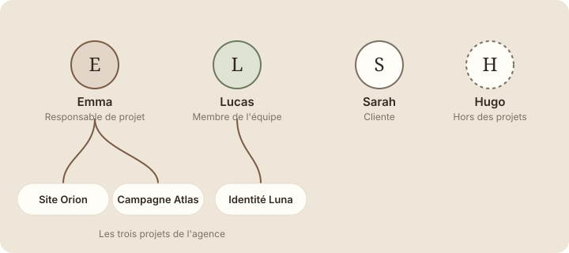

Entrer dans Studio Nova
À la fin de cette leçon, tu sauras qui est Studio Nova, ce que tu vas construire pour l'agence, et tu auras créé la page « Studio Nova » qui accueillera tout ton travail.
Étape 1 : comprendre
On apprend mieux un outil en s'en servant pour un vrai besoin. Pendant toute la formation, tu vas donc construire l'espace Notion d'une agence fictive : Studio Nova. Chaque nouvelle notion ajoutera une pièce à cet espace.
Studio Nova est une petite agence créative. En ce moment, elle travaille sur trois projets pour ses clients :
| Projet | Ce que c'est | Responsable | Statut |
|---|---|---|---|
| Site Orion | Refonte du site web du client Orion | Emma | En cours |
| Identité Luna | Création du logo et de la charte graphique de la marque Luna | Lucas | À faire |
| Campagne Atlas | Campagne de lancement sur les réseaux sociaux | Emma | Terminé |
Tu croiseras aussi quatre personnes : Emma, responsable de projet ; Lucas, membre de l'équipe ; Sarah, une cliente ; et Hugo, un collègue qui ne travaille pas sur ces projets.

Tout l'espace sera rangé dans une seule page, nommée « Studio Nova ». Elle contiendra toutes les autres, comme la couverture d'un classeur contient tous ses intercalaires.
Ton espace d'entraînement, c'est une page « Studio Nova », rangée dans « Pages privées », où tu peux tout essayer sans risque.
Attention : ne construis pas Studio Nova dans une page que tes collègues utilisent déjà. Range-la dans « Pages privées » : tu pourras te tromper, recommencer et supprimer sans déranger personne.
La carte de l'espace Studio Nova
Voici tout ce que tu vas construire, et à quel moment. Quand tu termines la leçon qui construit une partie, elle passe à « Créée ✓ ».
- Studio NovaLa page qui contient tout l’espaceCette leçon
- AccueilLes priorités de la semaineModule 2
- ProjetsLa base des projetsModule 4
- TâchesQui fait quoiModule 6
- RessourcesLes liens et fichiers utilesModule 6
- Notes & réunionsUne page par réunionModule 3
Aujourd'hui, tu poses seulement la première pierre : la page « Studio Nova », encore vide.
Créer la page Studio Nova
Tu verras la création de pages en détail au module 2. Ici, il suffit de suivre ces quatre gestes :
- Dans la barre latérale, survole le titre de la section « Pages privées ». Un petit « + » apparaît à sa droite.
- Clique sur ce « + ». Une nouvelle page vide s'ouvre, avec « Nouvelle page » écrit en gris à la place du titre.
Capture d'écran Notion Le « + » à côté de « Pages privées » et la page vide · images/captures/m01-nouvelle-page.png
- Clique sur ce texte gris et tape « Studio Nova ».
- Regarde la barre latérale : la page « Studio Nova » apparaît dans la section « Pages privées ».
Capture d'écran Notion La page « Studio Nova » dans la barre latérale · images/captures/m01-page-studio-nova.png
Astuce : tu n'as pas besoin d'enregistrer. Notion sauvegarde automatiquement tout ce que tu écris, au fur et à mesure.
Exercice · dans Notion
Ton espace d'entraînement
- Crée la page « Studio Nova » dans la section « Pages privées », comme dans le tutoriel.
- Ferme Notion, puis rouvre-le.
- Vérifie que ta page est toujours là.
Résultat attendu : dans la barre latérale, la section « Pages privées » contient une page nommée « Studio Nova », toujours présente après réouverture. Elle est vide : c'est normal, tu la rempliras dès le module 2.
À retenir
- Pendant la formation, tu construis l'espace de Studio Nova, une petite agence créative avec trois projets : Site Orion, Identité Luna et Campagne Atlas.
- Tout l'espace est rangé dans une seule page, « Studio Nova », qui contiendra les autres.
- Cette page est dans « Pages privées » : tu peux t'entraîner sans déranger personne, et Notion enregistre tout automatiquement.
Choisis une réponse avant de valider.
« Pages privées » est ton espace personnel. Tes essais et tes erreurs n'apparaissent chez personne. Tu peux créer des pages ailleurs aussi, mais pas pour un entraînement.
Choisis une réponse avant de valider.
Notion sauvegarde chaque modification dès que tu l'écris. Tu peux fermer l'onglet ou l'application sans rien perdre.